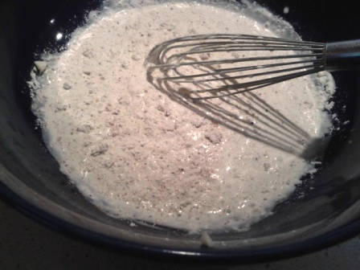
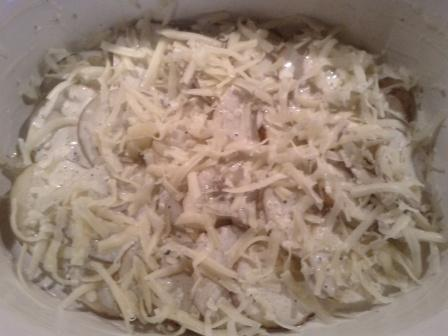
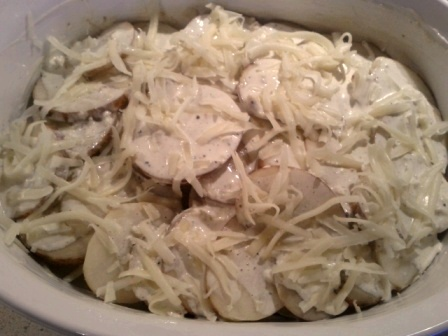
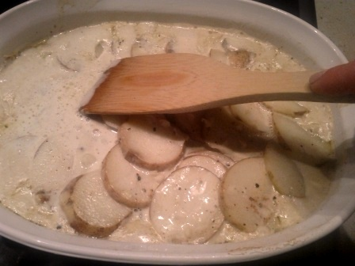
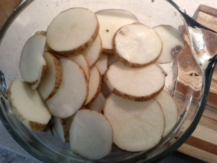
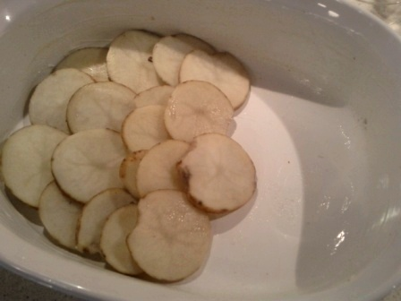
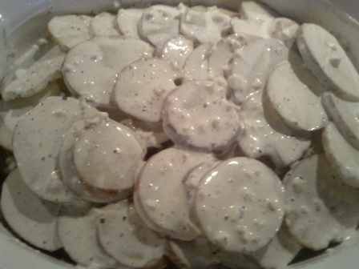
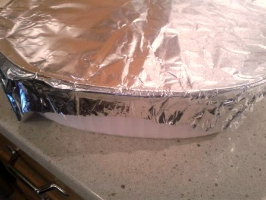

Homemade Scalloped
Potatoes Recipe

This homemade scalloped potatoes recipe is delicious. There I said it. It’s done. I’m not going to bore you with any long-winded stories about how sinfully tasty it is. Just make the dish and you’ll know.
The only thing I will say is that growing up I remember having “scalloped potatoes” from a box. I put the term in quotes because it tasted nothing like these scalloped potatoes.
Looking back it seems pretty impossible for anyone to dislike the combination of cheese, potatoes and cream but somehow I did (not that I have any confidence those were the actual ingredients used in the boxed version.)
As car enthusiasts might say, my love for the dish went from 0 to 60 in 1 second flat. All it took was making this beautifully cheesy creation for myself with whole, real ingredients and I’ll never take scalloped potatoes’ name in vain again.
If you are like me and your only reference point for this dish is some half-assed boxed version or a premade substitute, please, I beg you, give it another go. It really is a wonderful gift to life (albeit not your arteries).

Homemade Scalloped Potatoes Recipe
Ingredients
- 3 lbs. of Russet potatoes
- 2 cups of cream
- 2 cups gruyere cheese, grated
- 1 T butter
- 2 T flour
- 4 cloves of garlic, minced
- 1 tsp nutmeg (fresh if available)
- 2 tsp salt, 2 tsp pepper

Directions
- Scrub potatoes and remove any eyes they might have; slice them about ⅛ inch thick.
- Pre-heat oven to 400°.
- Use the tablespoon of butter to grease your baking dish.
- Whisk together 2 cups cream, 2 T flour, 2 tsp salt, 2 tsp pepper, 1 tsp nutmeg and 4 cloves minced garlic.
- Arrange one layer of potatoes on bottom of greased baking dish, pour a ½ cup of your cream mixture over the potatoes, then sprinkle on a ½ cup of gruyere cheese. Repeat this process so that you have two layers. At this point use all of your remaining potatoes to create your third and final layer. Pour over all of your remaining cream mixture, it should be about 1 cup. Set aside your remaining cup of gruyere cheese for later.
- Cover your baking dish loosely with tin foil then bake for 30 minutes. Remove dish, then with the back of a large spoon or wooden cooking utensil, gently press down on the top layer. This will break the crust that is forming on top and loosen some of the cream to make sure it is evenly distributed. Replace tin foil cover, bake for another 20 minutes. Remove and gently break the crust again.
- Add your final cup of gruyere cheese on top and bake uncovered for another 5 minutes or so. You want your top layer of cheese to get a little brown and bubbly so you might want to turn on the broiler for the final few minutes to finish the dish.
Photo Guide: making homemade scalloped potatoes
|
    |
    |
There you have it. My homemade scalloped potatoes recipe. After writing it down it looks kind of fussy but it’s really not. Make it once and you’ll see how simple it is and the results are truly impressive. My whole family ooed and awed for about a week after I made it for a holiday meal and it wasn’t even that hard...but don’t tell them that ;).

Hello! My name is Rebecca. Food is fun and being healthy can be delicious. These two principles guide the plant-based, vegan recipes I make and share on Veritably Veg. Check out my About page to learn more about me. Welcome! From my kitchen to yours, cheers.
Sponsored Ad